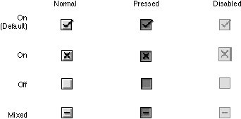
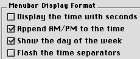

Checkboxes
A checkbox is a square with a text label next to it. The user clicks the checkbox or its label to select or deselect it. You can use one checkbox or as many as you need in a single setting.Checkboxes are designed to provide binary choices for users. For example, a dialog box for saving files could include a checkbox labeled "Compressed". In this case, the clearly implied opposite state would be an uncompressed file save.
If you want to provide a control for states which are less obviously binary, you might be better off using radio buttons and providing individual labels to clarify the states. It's sometimes tempting to use a checkbox because one item takes up less space than two, but the choice may be too ambiguous for users to understand.
The default state for a checkbox is also important. In the earlier Compressed checkbox example, setting on as the default state emphasizes a preference for compressed file saves, since the user is required to take an extra action to do otherwise.
Avoid the use of negative labels. A checkbox labeled "Delete read messages" with a default state of off is a clearer choice than a checkbox labeled "Do not delete read messages" defaulting to on.
There are two options for marking the checkbox in its on state. The default option is a checkmark to indicate that a checkbox is on, but if the checkmark is not culturally acceptable, the familiar "X" version of this control is available for localization purposes. When the checkbox is off, it is unmarked.
There is a mixed state for checkboxes, which shows that a selected range of items has some in the on state and some in the off state. For example, a text formatting checkbox for bold text would be in the mixed state if a text selection contained both bold and non-bold text.
Figure 2-8 shows how checkboxes look in their various modes and states.
Figure 2-8 Checkbox modes and states

Checkboxes differ from radio buttons in that they are independent of each other, even when they offer related options. Any number of checkboxes can be on, off, or mixed at the same time. Figure 2-9 features a group of checkboxes with two options selected concurrently.
Figure 2-9 A set of checkboxes with concurrent selections

It is important to arrange checkboxes in clearly organized groups. Allow ample white space between checkbox groups and other controls. Use separator lines (page 47) and group boxes (page 44) when appropriate. For more information on laying out checkboxes, see "Checkboxes and Radio Button Layout" (page 71).